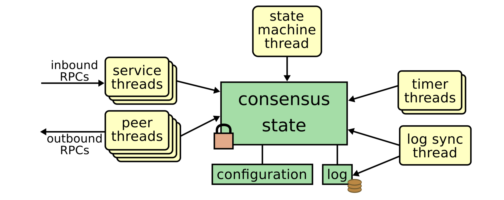

Raft 算法实现
Raft 协议用于在集群节点之间维护一个复制状态机。状态机通过将复制日志进行同步来保持。
Raft 库是稳定的，并且特性完整。被很多项目使用：etcd，Docker Swarm，CockroachDB，TiDB 等。
大多数 Raft 实现是单体设计：包括了存储处理，消息序列化和网络传输。相反，这个库遵循了极简设计哲学：仅实现 raft 算法的核心功能。这个极简设计带来了灵活性，确定性和更好的性能。
为了更容易的测试 raft 库，其行为必须是确定的。为了实现确定性，这个库将 Raft 作为一个状态机。状态机接受一个消息作为输入。一个消息可以是本地定时器更新或者网络发送的消息。状态机的输出是 3元组： {[]Messages, []LogEntries, NextStat} ，对于相同状态的状态机，相同的输入状态总是能够生成相同的状态机输出。
主要结构说明：
区分 node 和 RawNode 的原因是用于 multi-Raft 支持，在 CockroachDB 中，RawNode 代表的是一个 raftGroup
type Node interface {
Tick()
Campaign(ctx context.Context) error
Propose(ctx context.Context, data []byte) error
ProposeConfChange(ctx context.Context, cc pb.ConfChangeI) error
Step(ctx context.Context, msg pb.Message) error
Ready() <-chan Ready
Advance()
ApplyConfChange(cc pb.ConfChangeI) *pb.ConfState
TransferLeadership(ctx context.Context, lead, transferee uint64)
ReadIndex(ctx context.Context, rctx []byte) error
Status() Status
ReportUnreachable(id uint64)
ReportSnapshot(id uint64, status SnapshotStatus)
Stop()
}
// node 实现了 Node 接口，node 引用了 RawNode
type node struct {
propc chan msgWithResult
recvc chan pb.Message
confc chan pb.ConfChangeV2
confstatec chan pb.ConfState
readyc chan Ready
advancec chan struct{}
tickc chan struct{}
done chan struct{}
stop chan struct{}
status chan chan Status
rn *RawNode
}
// RawNode 包含 raft
type RawNode struct {
raft *raft
prevSoftSt *SoftState
prevHardSt pb.HardState
}
RawNode
Tick
TickQuiesced
Campaign
Propose
ProposeConfChange
ApplyConfChange
Step
Ready
HasReady
Advance
Status
BasicStatus
WithProgress
ReportUnreachable
ReportSnapshot
TransferLeader
ReadIndex
Bootstrap
Raft 使用实例
raftexample
CockroachDB Raft
TxnCoordSender ->DistSender -> Node -> Stores -> Store -> Replica
RPC 服务器：Node 和 Stores；Node 不做什么事情，而是委托给 Stores。
Replica：执行读操作，提议 Raft 命令。
写入操作流程如下：
Replica
executeWriteBatch // 执行写入消息 replica 入口
evalAndPropose
propose
r.mu.proposalBuf.Insert(p, data) // 将消息发送到 buf 中
raftScheduler // 调度器作为入口
EnqueueRaftRequest
(s *raftScheduler) worker
processReady // 开始处理 propose 消息
replica.handleRaftReady
proposalBuf.FlushLockedWithRaftGroup(raftGroup)
proposeBatch(raftGroup, b.p.replicaID(), ents)
raftGroup.Step(raftpb.Message{ // raft 模块开始处理
Type: raftpb.MsgProp,
Entries: ents})
sending all MsgApps
syncing all entries and Raft state to disk
sending all other messages.
r.sendRaftMessages(ctx, msgApps)
batch.Commit
ApplyCommittedEntries
ApplyToStateMachine
batch.Commit(sync)
raftGroup.Advance(rd)
processRequestQueue
Leaseholder: 在多地域的部署下，地理分区 leaseholder 拓扑对下面的需求很有用：
- 读延迟必须很低，但是写延迟可以相对较高
- 读必须是最新的数据，因为表被外键引用
- 表中的行以及所有对延迟敏感的查询都可以绑定到特定的地理位置，例如城市，州，地区。
- 在区域故障期间，表数据必须保持可用。
Raft博士论文
第十章 实现和性能
本质讨论 Raft 的实现和日志复制的性能
10.1 实现
我们已经将 Raft 实现为 LogCabin 的部分组件，一个复制的状态机作为一个网络服务器。我们最初开发 LogCabin 用于存储 RAMCloud 的配置信息，并用于辅助 RAMCloud 协调者的故障转移。我们计划在 LogCabin 中实现 Paxos，但是我们遇到的困难激发我们开发了 Raft。 然后，LogCabin 充当了 Raft 中新想法的测试平台，并且成为验证我们了解构建完整而实用的系统问题的一种方式。 LogCabin中的Raft实现包含大约2000行C++代码，不包括测试，注释或空白行。 源代码是免费提供的。下一节将讨论其架构。
除了LogCabin之外，在开发的各个阶段还有数十个Raft的第三方开源实现[92]。 其中许多使用与LogCabin不同的体系结构，例如ACTOR模型[106，73，68]或基于事件的编程[75，99，107]。 多家公司也在部署基于Raft的系统[92]。 例如，Facebook当前正在测试HydraBase，它是Apache HBase的分支[3]，它使用Raft进行复制[29]。
10.1.1 线程架构
Raft适合使用线程的简单实现架构，如图10.1所示。这不是唯一可能的体系结构，但这是我们在LogCabin中采用的方法。

- 对端线程：对端线程与集群中的其他服务器一样多。每个对端线程管理到其他一个服务器的RPC。每个线程使用条件变量进入共识状态监视器，以等待需要与给定服务器通信的事件。然后，它离开监视器（释放锁定）并发出RPC。RPC完成（或失败）后，对端线程将重新进入共识状态监视器，基于RPC更新状态变量，并等待下一个需要通信的事件。
- 服务线程：多个线程处理来自客户端和其他服务器的传入请求。这些线程在共识状态监视器外部等待传入的请求，然后进入监视器以执行每个请求。
- 状态机线程：一个线程执行状态机。它进入共识状态监视器以等待下一个提交的日志条目。当有可用条目时，它将离开监视器，执行命令，然后返回监视器以等待下一个命令。
- 计时器线程：一个线程为跟随者和候选者管理选举计时器。一旦随机的选举超时时间过去，它将开始新的选举。如果作为领导者，第二个线程导致服务器无法与大多数集群通信，则服务器将返回到跟随者状态。然后，客户端可以通过另一台服务器重试其请求（请参见第6.2节）。
- 日志同步线程：当服务器为领导者时，一个线程将日志条目持久地写入磁盘。无需在共识状态上保持锁定即可完成此操作，因此可以并行进行复制到跟随者。参见10.2.1节。为简单起见，跟随者和候选者在保持共识锁的同时直接从其服务线程写入磁盘。他们不使用日志同步线程。
10.2 性能方面的思考
Raft的性能类似于其他共识算法，例如Multi-Paxos。对于性能而言，最重要的情况是已建立的领导者正在复制新的日志条目。 Raft使用最少的消息（从领导者到集群的一半的单程往返）来实现此目的。还可以进一步提高Raft的性能。例如，Raft可以轻松支持批处理和流水线请求，以实现更高的吞吐量和更低的延迟，如下所述。第11章讨论了文献中针对其他算法提出的各种其他优化方法。其中许多可以应用于Raft，但我们将其留待以后的工作。 图10.2（a）显示了Raft处理客户请求所必须采取的步骤。通常，最耗时的步骤是将新日志条目写入磁盘并在网络上复制它。写入磁盘的时间可能从快速固态磁盘的100μs到慢速磁盘的10 ms，而当今的网络延迟则可能从高度优化的数据中心网络中的5μs往返时间到400 ms的往返时间不等。遍布全球的网络。在局域网上的实验中，磁盘还是网络占主导地位，这取决于我们使用的固态磁盘的型号。
10.2.1 并行写入领导者的磁盘
一种有用的性能优化可以从Raft的关键路径中移除磁盘写入。在简单的实现中，领导者将新日志条目写入磁盘，然后再将该条目复制到其后继对象。然后，跟随者将条目写入其磁盘。这将导致在处理请求的路径上两次连续的磁盘写入，从而对磁盘写入为主要因素的部署造成了显着的延迟。

幸运的是，领导者可以与复制到跟随者并将它们写入磁盘的同时并行地写入磁盘。参见图10.2（b）。为了简单地处理此问题，领导者使用其自己的匹配索引来指示已持久地写入其磁盘的最新条目。一旦领导者当前词条中的条目被大多数匹配索引覆盖，领导者就可以提升其提交索引。
如果大多数跟随者已将条目写入磁盘，则领导者甚至可以在将条目写入其自己的磁盘之前提交该条目。这还是安全的。 LogCabin实现了此优化。
10.2.2 批量和流水线
Raft支持日志条目的批处理和流水线化，两者对于实现最佳性能都很重要。当将多个请求收集到批处理中时，将分摊许多请求处理成本。例如，通过网络在一个数据包中发送两个条目比在两个单独的数据包中发送两个条目，或者一次将两个条目写入磁盘要快得多。因此，大批量可优化吞吐量，并且在系统承受重负载时非常有用。另一方面，流水线通过允许在处理另一个条目时开始处理一个条目来优化中等负载下的延迟。例如，当跟随者将前一个条目写入磁盘时，流水线操作允许领导者将网络上的下一个条目复制到该跟随者。即使在高负载下，流水数量也可以通过更有效地利用资源来提高吞吐量。例如，跟随者需要先通过网络接收条目，然后才能将其写入磁盘。批量处理不能一次使用这两种资源，但流水线可以。流水线在某种程度上也不利于批处理。例如，整体上延迟请求并向跟踪者发送一大批，而不是通过管道处理多个小请求，整体上可能更快。
批处理在Raft中很自然地实现，因为AppendEntries支持在一个RPC中发送多个连续的条目。 LogCabin的领导者会在跟随者的下一个索引和日志结尾之间发送尽可能多的条目，最大大小为1兆字节。一个1 MB的限制是任意的，但足以有效地使用网络和磁盘，同时仍向跟随者发送频繁的心跳（如果一个RPC太大，跟随者可能会怀疑失败的领导者并开始选举）。然后，跟随者将来自单个AppendEntries请求的所有新条目立即写入其磁盘，从而有效利用其磁盘。
Raft也对流水线提供了很好的支持。 AppendEntries一致性检查可确保流水线操作安全；实际上，领导者可以安全地以任何顺序发送条目。为了支持流水线，领导者乐观地对待每个跟随者的下一个索引；它会更新下一个索引，以在发送上一个条目之后立即发送，而不是等待上一个条目的确认。这允许另一个RPC在下一个条目之后传递下一个条目。如果RPC失败，记录将涉及更多。如果RPC超时，则领导者必须将其下一个索引递减回其原始值以重试。如果AppendEntries一致性检查失败，则领导者可以进一步降低下一个索引，以重试发送先前的条目，或者可以等待该先前的条目被确认然后再试一次。即使进行了此更改，LogCabin的原始线程体系结构仍然阻止了流水线操作，因为每个跟随者只能支持一个RPC。因此，我们对其进行了更改，以使每个对端产生多个线程而不是一个。
如果希望在正常情况下按顺序传递消息，则这种流水线方法最有效，因为重新排序可能会导致重传效率低下。幸运的是，大多数环境不会经常重新排序消息。例如，LogCabin中的领导者使用与每个跟随者的单个TCP连接，并且仅在怀疑失败时才切换到新连接。由于单个TCP连接会屏蔽应用程序中的网络级重新排序，因此LogCabin跟随者很少会乱序接收AppendEntries请求。如果网络通常对请求进行重新排序，则应用程序可能会从临时缓存乱序请求中受益，直到可以将它们按顺序追加到日志中为止。Raft系统的整体性能在很大程度上取决于如何安排批生产和流水线。如果在高负载下无法在一批中累积足够的请求，则整个处理将效率低下，从而导致低吞吐量和高延迟。另一方面，如果在一个批次中累积了太多请求，则延迟将不必要地增加，因为较早的请求会等待较晚的请求到达。尽管我们仍在研究最佳策略，但我们的目标是最大程度地减少动态工作负载下请求的平均延迟。在LogCabin中实现流水线操作之前，它使用了一种简单的双缓冲技术。领导者将为每个跟随者保留一个出色的RPC。当该RPC返回时，它将发送另一个带有同时已累积的日志条目的RPC，如果没有更多的可用条目，则在添加下一个RPC之后将立即发送下一个RPC。这种方法很有吸引力，因为它可以动态调整以适应负载。一旦负载增加，条目就会累积，下一批将更大，从而提高了效率。一旦负载减少，批次将缩小大小，从而降低了延迟。我们希望保留此行为以进行流水线处理。直观地讲，在两级流水线中，我们希望第二批在第一批处理时间的中途开始，从而将平均延迟减半。但是，猜测批处理何时完成需要估计往返时间。我们仍在研究在LogCabin中使用的最佳策略。
Raft系统的整体性能在很大程度上取决于如何安排批生产和流水线。如果在高负载下无法在一批中累积足够的请求，则整个处理将效率低下，从而导致低吞吐量和高延迟。另一方面，如果在一个批次中累积了太多请求，则延迟将不必要地增加，因为较早的请求会等待较晚的请求到达。
尽管我们仍在研究最佳策略，但我们的目标是最大程度地减少动态工作负载下请求的平均延迟。在LogCabin中实现流水线操作之前，它使用了一种简单的双缓冲技术。领导者将为每个跟随者保留一个出色的RPC。当该RPC返回时，它将发送另一个带有同时已累积的日志条目的RPC，如果没有更多的可用条目，则在添加下一个RPC之后将立即发送下一个RPC。这种方法很有吸引力，因为它可以动态调整以适应负载。一旦负载增加，条目就会累积，下一批将更大，从而提高了效率。一旦负载减少，批次将缩小大小，从而降低了延迟。我们希望保留此行为以进行流水线处理。直观地讲，在两级流水线中，我们希望第二批在第一批处理时间的中途开始，从而将平均延迟减半。但是，猜测批处理何时完成需要估计往返时间。我们仍在研究在LogCabin中使用的最佳策略。
10.3 初步性能结果
...
10.4 结论
我们希望在将来分析Raft的许多性能方面。对于正常操作而言，最重要的是，我们想分析在负载变化的情况下写入操作和只读操作的延迟和吞吐量。在特殊情况下，我们还会分析各种性能问题：
- 客户多快找到领导者？
- 新领导者多快完成一次首次进入，包括领导者多快发现其追随者的日志在何处发散？
- 跟随者故障对正常运行有什么影响？
- 重新配置集群需要多长时间，它对正常运行有什么影响？
- 压缩日志需要多长时间，并且对正常操作有什么影响？
- 服务器/群集重新启动需要多长时间？
我们使用Raft的性能目标是匹配当前算法，例如Multi-Paxos，而提高可理解性。我们不是想构建最快的系统，而是想让其他人构建在性能上具有竞争力的基于共识的系统。尽管LogCabin尚未进行优化，但初步结果表明，它可以实现合理的延迟和吞吐量：使用单个客户端线程，将千字节大小的对象写入三台服务器的群集每次操作大约需要1.0毫秒，并且当使用100个客户端线程时，系统每个时每秒可处理19500次操作。
第十一章 相关工作
11.1 共识算法概览
11.1.1 Paxos
11.1.2 基于领导的算法
11.2 领导选举
11.3 日志复制和提交
11.4 集群成员变更
11.5 日志压缩
11.6 复制状态机 vs. 主节点拷贝
11.7 性能
11.8 正确性
11.9 可理解性
Raft 讲解笔记(TiKV作者)
单节点
- 单节点故障
- 业务数据无法存放
复制
- Master-Standby
- 异步复制：丢数据
- 同步复制：主节点宕机后如何处理？备机又是单节点存在上面的问题
- Quorum：2N+1，允许一台宕机，升主问题，脑裂问题（读到旧的数据，不一致，线性一致性）
- 线性一致性
共识算法
- 共享状态达成一致
- 自动故障恢复
- 强一致性（线性化）
Raft
（说明 paxos，raft 历史以及相关信息）
keypoints
- 对复制状态机复制日志
- Leader、Follower，Candidate
- 任期与领导选举
- 日志复制
- 成员变更
复制状态机
- 客户端、服务器
- 共识模块
- 状态机
- 日志
角色
- 领导者
- 仅一个领导者
- 由多数派节点选举而来
- 处理所有其它客户端的请求
- 跟随者
- 接受领导者的复制日志
- 候选者
- 选举
任期
- 时间问题，raft 不依赖时间，将时间分割为不同的term
选举
- 状态机转换图
日志复制
- 多数派复制
- 日志提交
- 异步将已经提交 index 发送给跟随者
快照
- Leader 生成快照
- 截断日志
- 发送日志
成员变更
- 增加节点，在线
- 一次增加多个节点会违反 Raft 协议，一次增加一个节点
- joint consensus
优化
- Pre-Vote：由于网络抖动一个 follower 发起选举，但是其它人都是 OK 的
- Pipeline：
- Batch：Pospose(req1,req2,req3) → Append
- 领导者并行发送，日志落盘
- Non-Voter: 追日志过程中，不投票状态，不干扰已有集群
- 参考：博文
Multi-Raft
- Range: 分割
- Raft Group
- Scale-Out：平衡
raft 讲座笔记(Raft作者)
目标：复制日志
多个客户端，多个服务器 1. 复制的日志=>复制状态机：所有服务器按相同的顺序执行相同的指令 2. 共识模块保证正确的日志复制 3. 只要多数个节点运行，则系统可以继续 4. 故障模型：故障-停止（不是拜占庭，故障就停止），延迟/丢失消息
达成共识的方法
两个可能的方法： 1. 对称的，无主节点 - 所有服务器有相同的角色 - 客户端可以访问任何一个服务器 2. 非对称的，基于领导者的 3. Raft使用领导者 - 解耦问题（正常操作，领导者变更） - 简化正常操作（没有冲突） - 比无主的方法更有效
Raft和概览
- 领导者选举
- 正常操作（基本的日志复制）
- 安全性和一致性（在领导者变更之后）
- 废止老的领导者
- 客户端操作：实现线性化语义
- 配置变更：增删节点
服务器状态
- 在任何时间点，每个服务器可以是：
- leader
- follower
- candidate
- 正常操作过程中，1个领导者，N-1个跟随者
- 状态转换图
Terms
- 时间被分割为terms
- 选举
- 在单个领导者下的正常操作
- 每个term最多只有一个领导者，或者没有领导者
- 每个服务器维护当前的term值
- terms的主要目的：区分过时的信息
raft协议总结
Followers Candidates Leaders 持久化状态 Log Entry RequestVote RPC AppendEntities RPC
心跳和超时
- 服务器以跟随者角色启动
- 跟随者期望收到领导者和候选者的RPC
- 领导者必须发送心跳（空的AppendEntires RPCs）来维护权威性
- 如果选举超时，没有收到RPCs：
- 跟随者假设领导者已经宕机
- 跟随者开始新的选举
- 超时tong 通常是：100-500ms
选举基础
- 增加当前的term值
- 角色变更为候选者
- 给自己投票
- 发送 RequestVote RPCs给所有其他的服务器，尝试直到：
- 收到多数派的投票应答：变为领导者，发送AppendEntries心跳给所有其他服务器
- 接受到有效领导者的RPC消息：返回到跟随者状态
- 没有任何一个赢得选举（选举超时时间过去了）：增加term，开始新的选举
选举（接上面）
- 安全性：只允许每个term最多一个获胜者
- 活性：一些候选者肯定最终会赢得多数票投票
- 选举超时时间随机： [T, 2T]
- 每个服务器通常会超时，在其他人醒来之前会赢得选举
- 如果 T >> 广播时间，则工作得很好
日志结构
log index | 1 | 2 | 3 | 4 | 5 |
|----|----|----|----|----|
term | 1 | 1 | 1 | 2 |
command |add |cmp |ret |mov |
|----|----|----|----|
日志存储在持久化存储上，故障后可以恢复 如果多数服务器上存储了一条日志，日志认为是已经提交的
正常操作
- 客户端发送命令给领导者
- 领导将日志写入其日志
- 领导者发送 AppendEntries RPCs给跟随者
- 一旦一个日志被提交
- Leader将命令传给其状态机，返回结果给客户端
- 领导者在后续的AppendEntries RPCs中，通知跟随者提交信息
- 跟随者发送已经提交的命令给其状态机
- 故障/慢 跟随者
- 领导者尝试发送RPCs，直到成功
- 性能在通常情况下是最优的
- 一个成功的RPC到任意多数票服务器
日志的一致性
日志是连贯的 - 如果不同的服务器上相同的index和term，则日志必然相同 - 如果一条日志被提交，所有前面的日志必须被提交
AppendEntries一致性检查
reject induction step(归纳步骤)
领导者变更
安全性要求
选择最好的领导者
提交当前任期的日志
新的提交规则
日志不一致性
修复跟随者日志
废除老的领导者
客户端协议
重试机制，客户端需要对每个命令嵌入唯一的ID 保证恰好一次的语义
配置变更
使用2阶段 joint consensus
其它
coordinator 如何使用 raft 或者 paxos 来保证高可用？解决2PC残留问题。
- 多CN写入，多节点互相备份，挂掉一个不影响其它CN，2PC信息不回丢失
- 冲突处理
- multi-Raft支持？
- 节点变更：两个节点到一个节点如何处理？参考 etcd raft readme
两个节点需要多数派（也就是两个节点都正常时）先写入一条节点变更的日志，然后删除另一个节点
- 如果少数节点写入了日志，这一条日志一定会被丢弃吗？如果多数节点写入日志，但是客户端还没有收到应答，服务器就宕机了。客户端如何处理？仅写入一次的语义如何保证？